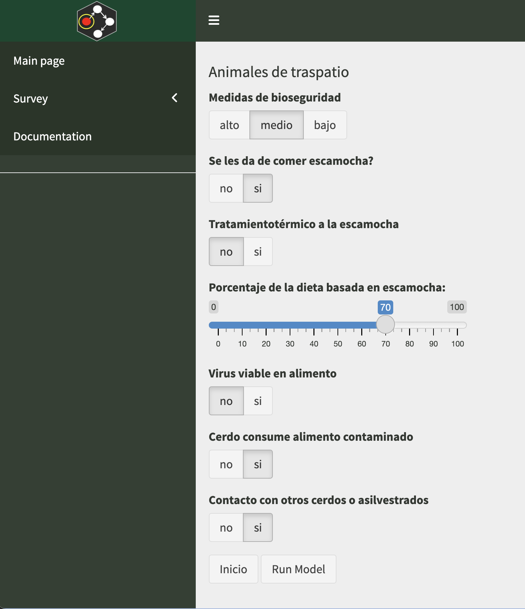

Rapid Risk Assessment
Pablo Gomez
Outline
- Introduction
- What is rapid risk assessment?
- Integrating data from different sources
- Sensitivity analysis
- Risk assessment in R
- Hands on practice
- More example
Posit cloud
Introduction
Risk assessment
Rapid Risk Assessment?
Integrating data from multiple sources
Observational/Experimental data
Fitting distributions
Summary statistics (min, max, mean, median)
Literature
Expert Opinion
- Focus groups
- Interviews
- Surveys
- Expert panels
Expert opinion

Sensitivity Analysis

Current challenges with RA

quantrra: Risk assessment in R
quantrra
quantrra
quantrra
quantrra
# define a model table using one of the provided examples
m <- quantrra::OIRSA
ra_run(m = m, nsim = 10) # Run the model P1 P2 P3 R1 R2 H1 H2
1 0.5213353 0.12729131 0.1744331 0.6353901 0.5117023 100.44826 16.08468
2 0.4182868 0.16656444 0.2498435 0.7495283 0.4372456 72.85584 34.56728
3 0.4910226 0.42013713 0.2590504 0.6077976 0.2958559 22.46179 32.95413
4 0.3355474 0.32046276 0.2244519 0.7015109 0.6258329 48.78371 40.31443
5 0.4305247 0.18676188 0.2873518 0.4876877 0.8201492 22.98473 11.00778
6 0.5902018 0.18723737 0.4043745 0.7484689 0.6104229 94.44883 12.21751
7 0.5398169 0.13835340 0.4702466 0.6481139 0.6234663 75.15061 37.95840
8 0.5532345 0.16148946 0.4261390 0.5585004 0.6990359 105.72870 42.26904
9 0.3448274 0.05702125 0.1805186 0.3849002 0.7271356 28.96834 43.93552
10 0.6737142 0.35788770 0.3772803 0.6353009 0.6151513 23.03876 23.06493
P4 R3 X Z P
1 0.011575634 0.3251306 0.0037635926 116.53295 0.43858254
2 0.017407023 0.3277279 0.0057047675 107.42312 0.61282395
3 0.053441276 0.1798205 0.0096098382 55.41592 0.53253800
4 0.024135411 0.4390287 0.0105961369 89.09814 0.94409604
5 0.023104692 0.3999766 0.0092413374 33.99251 0.31413630
6 0.044686553 0.4568826 0.0204165074 106.66633 2.17775400
7 0.035120602 0.4040772 0.0141914331 113.10902 1.60517902
8 0.038071921 0.3904118 0.0148637285 147.99774 2.19979824
9 0.003549445 0.2798746 0.0009933995 72.90386 0.07242266
10 0.090967564 0.3908061 0.0355506831 46.10369 1.63901777RA: Example
Example of ASF in Spain

Recap of some R concepts
R Studio

Operators
Operators are characters with a specific function in R for example
[1] 6[1] 1[1] 16Later we will see other kind of operators, but… DONT STRESS about learning everything.
Objects
Objects in R are containers for information, we can create objects with any names we want that start with a letter
Hands on practice
More examples
Animal health

Food safety
Multilevel architecture
Multilevel architecture
Questions?
jpgo@ucdavis.edu
Comments
COMMENT AS MUCH AS POSSIBLE!
What is the difference between line 1 and 2?
YES! the
#character will make everything after it a comment in that line of code